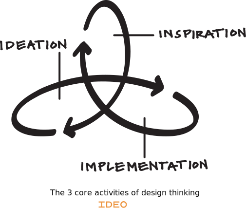

Compre na Amazon, Submarino ou MercadoLivre.
Engenharia de Software Moderna
O que é Design Thinking?
Introdução
Design Thinking é uma abordagem para solução de problemas – não apenas de Engenharia de Software, mas qualquer tipo de problema. A abordagem é inspirada em métodos e técnicas usados há tempo por designers industriais, designers gráficos, designers de interface com o usuário, etc.
Com o passar dos anos, os designers perceberam que esses métodos e técnicas poderiam ser usados não apenas para melhorar a ergonomia de um produto ou criar uma interface mais amigável, mas também para resolver diversos outros problemas. Daí o nome Design Thinking, ou seja, o objetivo é levar o pensamento dos designers para outras áreas.
Apesar de seus conceitos principais existirem desde os anos 60, Design Thinking tornou-se popular a partir da década de 90 com seu uso pela IDEO, uma empresa de design norte-americana. A IDEO ajudou a projetar, por exemplo, os primeiros mouses da Apple.
Outro motivo para essa popularidade deve-se ao fato de Design Thinking ser considerado uma abordagem capaz de propor soluções criativas e inovadoras para problemas de maior complexidade. Ou seja, o objetivo não é desenvolver um produto ou sistema cujos requisitos já estão bem definidos.
Exemplos
Primeiro, vamos apresentar um cenário onde o uso de Design Thinking não é recomendado. Suponha que uma empresa seja contratada para construir um sistema Web para gerenciar a aplicação de provas online com questões de múltipla escolha. Nesse caso, a solução que está sendo demandada está bastante clara e não precisamos usar Design Thinking. A empresa pode, por exemplo, usar usar práticas de métodos ágeis, como histórias de usuários e conversas com um Product Owner (PO) para clarificar e priorizar os requisitos do sistema.
E agora um exemplo de cenário no qual Design Thinking pode ser interessante: suponha que uma empresa – ou melhor, uma universidade – esteja interessada em desenvolver um método inovador para ensino de Engenharia de Software. Ou seja, nesse caso, não temos clareza sobre a demanda que está sendo pedida. Não sabemos nem ao certo se esse método demandará a implementação de um sistema de software. Então, a universidade – ou um departamento dela – pode usar Design Thinking para entender melhor o problema e delinear as linhas gerais de uma possível solução.
Principais Atividades
Design Thinking não é definido por meio de um conjunto de passos, tarefas e papéis. Isto é, Design Thinking não é uma fórmula ou um algoritmo, que recebe como entrada um problema genérico, abstrato e desafiador e gera como saída uma solução inovadora.
Porém, as seguintes atividades principais caracterizam um processo de Design Thinking:
- Inspiração
- Ideação
- Implementação
Nas próximas seções, vamos detalhar essas atividades e também os conceitos e princípios que são usados ao longo de um processo de Design Thinking. Antes, no entanto, já gostaríamos de comentar que esses processos são conduzidos por equipes multidisciplinares, que incluem profissionais de diversas áreas e com diferentes experiências. Argumenta-se que multidisciplinaridade é um ingrediente fundamental para fomentar pensamentos e ideias fora da caixa e, portanto, maximizar as chances de se chegar a soluções inovadoras.
Inspiração
Design Thinking recomenda que, antes de propor soluções para qualquer problema, os designers devem entender e vivenciar esse problema, sob o ponto de vista daqueles que estão sofrendo com ele e que depois irão se beneficiar da solução proposta. Isso é importante para ter insights de soluções interessantes.
Para entender o problema, o designer deve entrevistar os usuários, visitar seus locais de trabalho, observar e estudar seus comportamentos, etc. Como vimos no Capítulo 3, tais estudos que observam ao vivo os usuários afetados por uma solução são chamados de estudos etnográficos. No limite, o designer pode até se passar por um usuário. Por exemplo, em seu livro sobre Design Thinking, Tim Brown – que por um tempo foi um dos principais executivos da IDEO – reporta o caso de um designer encarregado de melhorar o serviço de atendimento de um hospital. Para isso, ele simulou que tinha quebrado o pé e, então, experimentou na própria pele o serviço de atendimento desse hospital.
Por outro lado, Design Thinking dá menos ênfase a instrumentos como questionários e pesquisas de mercado. A seguinte frase de Steve Jobs ilustra bem os limites desses instrumentos:
Nosso trabalho é descobrir antes o que os clientes querem. Acho que Henry Ford disse uma vez: se eu perguntasse aos meus clientes o que eles queriam, eles teriam me dito um
cavalo mais rápido. As pessoas não sabem o que querem até que você mostre a elas.
Design Thinking recomenda também prestar atenção a usuário extremos
, como crianças, idosos, adotantes iniciais de tecnologias, etc.
Ideação
Após entender o problema, pode-se avançar para atividades de geração e testes de ideias para solucioná-lo. Tais atividades são chamadas de ideação. Mais precisamente, incentivam-se dois tipos de atividades:
- Pensamento divergente e convergente
- Prototipação e Testes
Pensamento divergente e convergente
Essa primeira atividade é ilustrada na próxima figura:

Em um primeiro momento, todos os membros da equipe são incentivados a rascunhar soluções para o problema proposto, sejam elas convencionais ou não. Ou seja, em um processo de brainstorming, soluções fora da caixa
são incentivadas.
Lembre-se que o objetivo de Design Thinking é gerar soluções inovadoras e não incrementar marginalmente a qualidade de um produto ou serviço existente. A seguinte frase, do cientista Linus Pauling — ganhador de dois prêmios Nobel, em Química e da Paz — ilustra a importância desse primeiro momento:
Para ter uma boa ideia, você precisa antes ter muitas ideias.
Prosseguindo com o processo, em um segundo momento, deve-se convergir para um número limitado de soluções. Ou seja, a equipe deve descartar algumas das soluções propostas inicialmente. O próprio proponente de uma solução pode desistir da sua proposta ou então pode-se escolher, por meio de uma votação, as soluções que continuarão no processo.
Prototipação e Testes
Em seguida, ainda como uma atividade de ideação, deve-se construir protótipos para as melhores ideias e testá-los com usuários reais. Os protótipos iniciais podem ser bem simples. Por exemplo, o primeiro protótipo de mouse que a IDEO criou para a Apple era formado pela esfera de um desodorante roll-on colada em uma embalagem de margarina.
Porém, a criação de protótipos é mais difícil em certos tipos de problemas. Por exemplo, na área de serviços pode ser necessário criar espaços físicos, mesmo que de forma improvisada e, por exemplo, com móveis de isopor. Uma alternativa a protótipos físicos consiste no desenho de storyboards (ilustrações) descrevendo a jornada de um usuário ao usar um determinado serviço. No caso de software, storyboards podem ser usados para prototipar pelo menos a interface do sistema.
Implementação
Por fim, escolhida uma solução, o designer deve acompanhar a sua implementação ou implantação. Por exemplo, deve ajudar a explicar a solução para o resto da organização. Deve também ajudar na criação de uma estratégia de divulgação e marketing.
Comentários Finais
Talvez, a explicação anterior leve o leitor a pensar que Design Thinking é um processo sequencial. No entanto, em qualquer atividade pode-se retroceder
para um ponto anterior. Por exemplo, durante as atividades de ideação pode-se perceber que são necessários mais dados e insights sobre os problemas dos usuários. Como um outro exemplo, após uma prototipação, pode-se perceber que a ideia que foi escolhida não está funcionando bem. Logo, deve-se retroceder e escolher – ou mesmo gerar – uma nova ideia.
Por isso, costuma ilustrar essas atividades por meio de anéis
(ou espaços) interconectados, como na seguinte figura (extraída do seguinte site da IDEO):

Para concluir gostaríamos de listar as habilidades importantes em um Design Thinker, segundo Tim Brown: capacidade de identificar padrões na desordem de informações complexas, de sintetizar novas ideias a partir de fragmentos e de sentir empatia por pessoas diferentes dele mesmo.
Para Saber Mais
Existe um vasto material sobre Design Thinking. Uma das boas referência sobre o assunto é o livro de Tim Brown, que usamos como referência para elaboração deste artigo.
Exercícios
Por que é importante que um Engenheiro de Software tenha uma conhecimento básico de Design Thinking?
Pense e descreva resumidamente um problema que pode se beneficiar do uso de Design Thinking.
Qual a diferença entre Design Thinking e Design Sprint? Uma descrição resumida de Design Sprint é apresentada na Seção 3.5.3 do Capítulo 3 do livro.
Voltar para a lista de artigos.